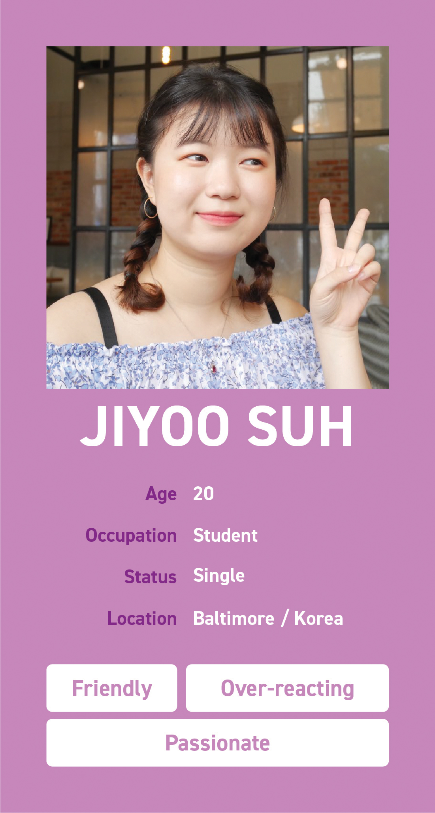
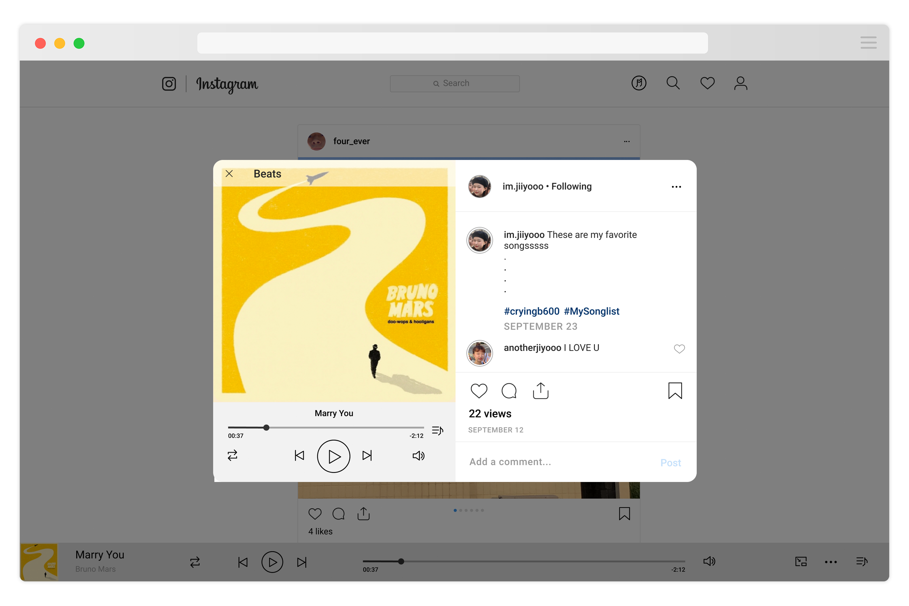
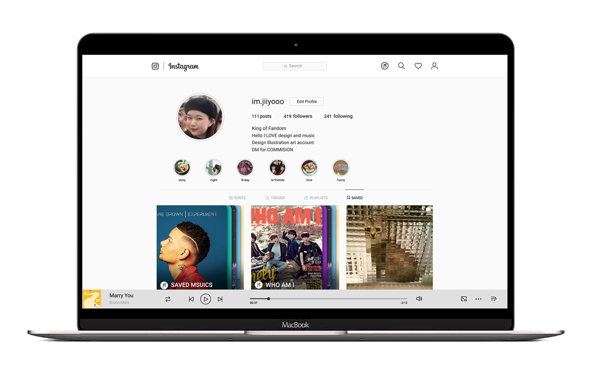
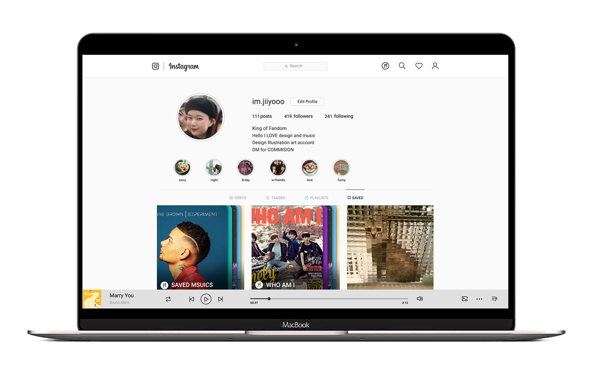

Product Concept
Instagram is designing a music streaming service called InstaMusic for all Instagram users.
InstaMusic users can create their own playlists,
follow and like other users playlists, share the playlists, or simply just listen to music.
Instagram users no longer need other music streaming service while they are on Instagram.
The best thing about InstaMusic is that you can take a sneak peek at your favorite star's or influencer's playlists.
Also, available on a computer/ PC without installation or update.
Target Users
- Music Lover
- Fandom
- Influencer
Interview Questions
- What streaming service or application do you use to listen to music.
- Why do you use it even though there are many other services out there? Please explain the reasons for your choice.
- What kind of function do you count on?
- What do you want more from your music streaming service/ application? Needs and wants?
- When do you listen to music? (Work? Workout? Rest?)
- Would you listen to one's playlist that you admire (ex. your favorite influencer or movie star)?
- What do you wish to see from Insta music? Any function, design, skills, etc.
Music Lover
Q: What is the route of getting your playlist?
Actually, there are many different ways. Recommendation from other people or friends.
Or I listen to first five to ten seconds of a song, and it is added to my playlist if I like it.
Also, I like to listen some songs that my favorite artist recommends or listens to.

Fandom
Q: What is the route of getting the playlists of your favorite musician?
I get their playlists from twitter. What songs they listen to.
Other fans upload the lists of songs on twitter and share them with other fans.
Influencer
Q: What do you wish to see from Insta music? Any function, design, skills, etc.
I'm bored with the graphics that Spotify is offering.
In general, it's not great that most album art is now images of the musicians.
Could insta music offer new ways to visualize music?
I wish insta music could help me better mix playlists that students will like so I feel cool.
Wireframe (Mobile)
Wireframe (Web)
3 Key Features
- Looking at other user's playlist
- Creating playlists and sharing with others
- Free streaming service, no need to multitask
Feature 1
Looking at other user's playlist
The user can listen to the saved list through the playlist next to the gallery in the profile of another user.


Feature 2
Creating playlists and sharing with others
In mobile version, press + button at the bottom and go to music tab can create a new playlist.
In the Web version, user can create your own playlist from My Playlist on the right side.


Feature 3
Free streaming service, no need to multitask
On mobile, the user can open the control bar with tap the music bar below. Click the Music list icon to view the list.
In the web version, you can use the Minimize button to minimize the music bar to view a widescreen.


Usability Tests
A fan's point of view
Fan looking at his or her favorite influencer's playlist:
- Can you find your following list?
- Can you find your favorite singer (B1A4) on the list?
- Do you know where to go to see B1A4's personal playlists?
- Do you know how to save a song from B1A4's playlists?
- Do you know where you can see all the saved songs?

Influencers' point of view
Users can create their own playlists and share them with others:
- Do you know where to go to start creating a playlist?
- Can you delete the song "Hold My Hand" from the list?
- Can you name your playlists?
- After you have created your playlist, can you share it?
No need multitask
You can listen to playlist while using instagram
- Can you play the song on your playlists from where you are?
- Can you tell the name of the song that you are listening to?
- While you are listening, can you see the list of the songs?
- Tell me the name of the next song.
- Can you find others' comments on your playlist feed?
Results and insights
Things that change after a user test
Issues
- Clarify "lists" icon
- Hard to find edit icon of playlists
- Difference between looking at a single song and playlists
- Playlists do not read as the "list of the songs"
- Hard to find saved playlists
Solution
- New lists icon design
- Music bar problem
- Multiple album images for playlists
- "Make my playlist" function now on my playlists section
- Saved song to Saved music
Final Look

 
